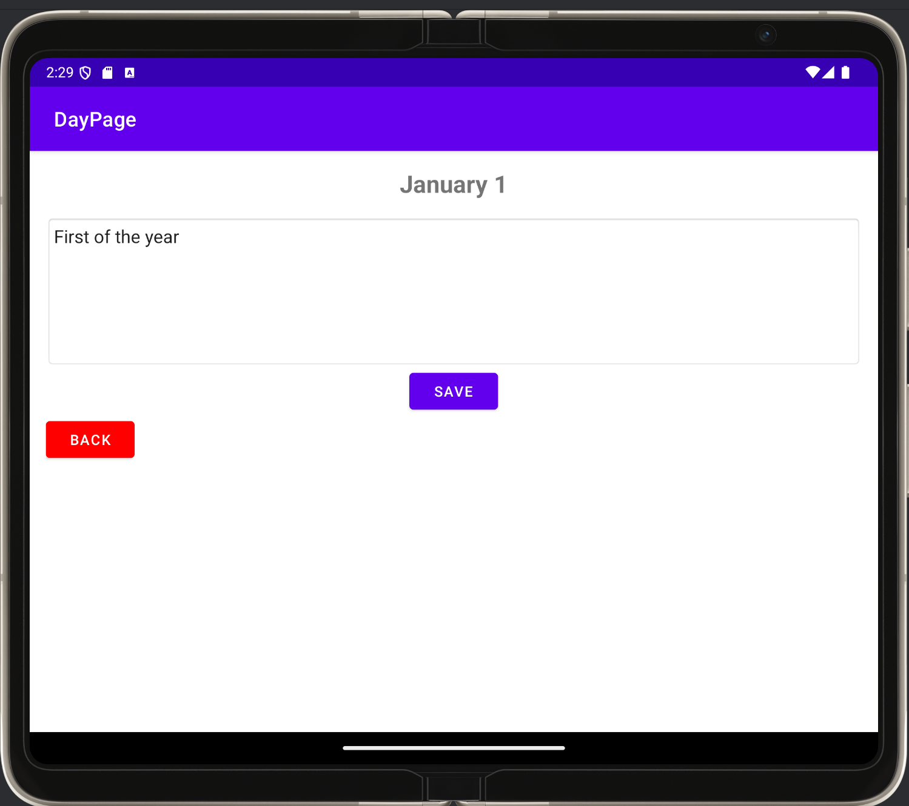
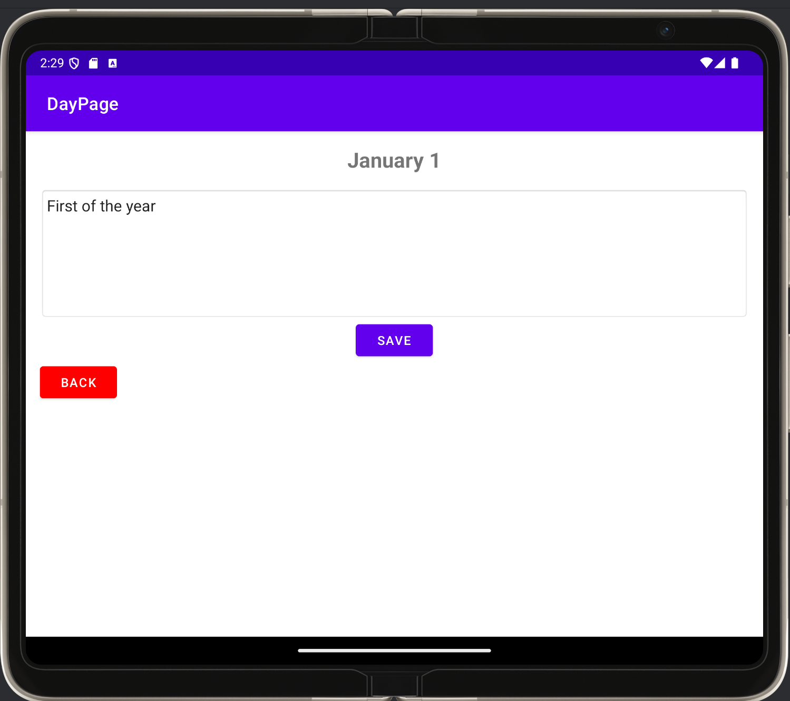

This code review was done before any work on the artifact itself. The detailing is meant to show how poor of a state the Calendar was in to begin with, and how I would fix it.
The three pictures below highlight the changes made to the Calendar. They showcase my ability to create a clean user interface, with user experience in mind.
 
